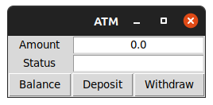
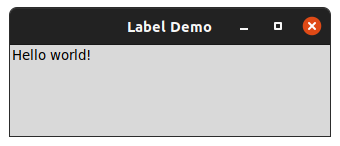
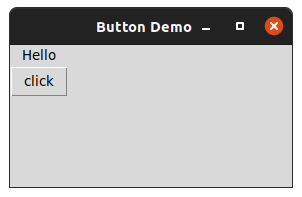
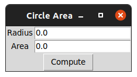
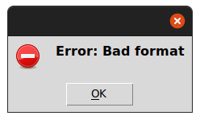

In this lab, you will learn:
Programming in the workplace can happen in many different ways: you may be on a large (or not so large) team building an application for the public. This type of work is usually given to software developers who have a specific set of skills. Alternatively, you may be asked to create smaller, less polished applications for internal use. These type of jobs are very common: we create scripts to automate tedious tasks and to focus on more demanding tasks.
You will find that laypeople are intimidated by the shell, and are much more comfortable using tools with a graphical user interface (GUI). GUIs have the additional advantage of discoverability – we can often learn a lot about what a GUI application can do by exploring its menus and interface.
The good news is that creating GUI applications is possible in Python, but requires us to set up the interface and learn a little about Event-Driven Programming.
It is important to remember that much of how a GUI looks and behaves is defined at the operating system level. Modern OSes now have common features: we can expect to have a title bar with buttons to close, maximise and minimise that window. We expect that many applications will have a menu bar with further settings, and that there will be objects such as text boxes, labels and buttons that the user can interact with. Below is an example of a GUI application that we will be building at the end of the lab.

Again, every operating system will have a different way of presenting these objects, but we can be reasonably certain that their behaviour will remain consistent. Python provides us with a Framework for defining these window objects, and then passing these objects to the operating system so that they can be rendered. Analyze the ATM example carefully. How many different objects are there?
Whereas the scripts we have created up until now will run a set on instructions from start to finish, when we are creating GUI applications we are defining a set of instructions and associating them with these window objects. Clicking on the “Deposit” button in the example above will trigger a function, for example.
This is called Event Driven Programming. The main behaviour of our program will not be calling functions, but creating the objects we want to present and then waiting for the user to interact with them. The data is the same, however.
The framework tkinter already exists in the Python Standard Library, and will allow us, with a little work, to create GUI applications. Our first application will need to define a new Class based off of tkinter’s Frame class, and we will need to define what window objects are created. Create a new file called lab9a.py and add this code.
from tkinter import *
class LabelDemo(Frame):
def __init__(self):
...LabelDemo. It is based off of the Frame class. There is a special method we are defining called __init__. This is a special method that is called when we create a new object. Add the following code so that your __init__ looks like mine: def __init__(self):
"Sets up the window and widgets."
Frame.__init__(self)
self.master.title("Label Demo")
self.grid()
self._label = Label(self, text = "Hello world!")
self._label.grid()_label from the class Label. And we are setting the text for that object to Hello world!. Finally, we add this _label object to our grid.__init__ method is complete, but you will notice that nothing happens yet. We have defined a new class, but we are not yet creating an object based off of it. We will need to do that now. Add the following code to the end of your script, and make sure that it has no indentation.def main():
"Instantiate and pop up the window."
LabelDemo().mainloop()
main()Inside this new main() function, we create a new object based off our LabelDemo class, and mainloop() will allow our Window to remain open and wait for user interaction.
Save and run your program. If all is well, you should see a window created that looks like this:

We have discussed objects before: they are a more modern way of organising code. You have had experience creating objects; however in this lab you have also created a Class. A class provides a ‘template’ for each object created from it. Classes generally are named with Capital Letters, such as LabelDemo and Label.
When you create an object using a class, the __init__ method is called and will initialise various attributes for our object. Inside our LabelDemo init, we set a master title and create another object called _label. _label is set up using a template Label, which in turn calls its own __init__ method. You can see that we pass text = "Hello world!" to this object, and this becomes the text that the label displays.
self?The methods and attributes that we create in Python have to be associated with each object that they belong to, so it is required that we pass self as a parameter inside each method that we create. This is a confusing concept, but don’t worry: all you have to remember is to include self inside method definitions!
Programming using objects and classes can be difficult to grasp at first, but for the GUI application it is absolutely essential. One other thing to note: we can set objects to be private by starting them with an underscore, such as _label. It’s recommended that you follow this practice.
Ensure that lab9a.py is open. Inside LabelDemo’s __init__ method, create a new label object. Name the object self._label2 and make sure it’s being created from the Label class. In fact, the only change that you should make is in the text string!
Once you have created this new label, use self._label2.grid() to add it to the window. Save and run your script.
This should hopefully illustrate the use of objects and classes.
Label is a template._label and _label2 are objects.Label class defines how label objects work, but each label object will have its own unique text.self._label = Label(self, text = "text") will called Label’s __init__ method, and text = "text" will be passed in.Label’s __init__ method, all we need to know is to pass in text = "text" to have it work.Our first program is not very interactive: labels just display text and nothing more. In order to create interactivity we will need to introduce buttons. Create a new file called lab9b.py and include the following code:
from tkinter import *
class ButtonDemo(Frame):
def __init__(self):
Frame.__init__(self)
self.master.title("Button Demo")
self.grid()
self._label = Label(self, text = "Hello")
self._label.grid()
self._button = Button(self, text = "click", command = self._switch)
self._button.grid()
def main():
"Instantiate and pop up the window."
ButtonDemo().mainloop()
main()This code resembles our previous example but also defines a new object of the Button class. The command = self._switch here is pointing to a method that will be called when the button is clicked. We will need to define this method inside the ButtonDemo class. Make sure that this method comes before main(), and make sure that the def line is indented four spaces. It should be at the same indent level as def __init__.
def _switch(self):
if self._label["text"] == "Hello":
self._label["text"] = "Goodbye"
else:
self._label["text"] = "Hello"Run lab9b.py now. Click the button to see what happens.

command = self._switch from the line that creates _button and see what happens.command = text, but instead of _switch, come up with your own method name (Don’t forget self!) Then make sure you change the def _switch line to match that method name._label’s text. Change this so that _button’s text is modified instead.tkinter is arranging our objects in a default manner. For me, it is placing the label on top of the button. We can change this so that the label and button are on the same row, but next to each other. We will modify the .grid() instructions, providing a row and column for each object.self._label.grid(), put row = 0, column = 0 inside grid’s parentheses (). Put row = 0, column = 1 inside the grid for self._button. Run the script and note the difference.| row 0, column 0 | row 0, column 1 |
|---|---|
| row 1, column 0 | row 1, column 1 |
Now that we have introduced events using buttons, we can introduce another window object. Text boxes will be familiar to most of us: these are (usually) white boxes that the user can input text into. We can also print output to text boxes. tkinter provides us with an Entry object that will implement text boxes.
lab9c.py.from tkinter import *
import math
class CircleArea(Frame):
def __init__(self):
Frame.__init__(self)
self.master.title("Circle Area")
self.grid()
self._radiusLabel = Label(self, text = "Radius")
self._radiusLabel.grid(row=0, column=0)
self._radiusVar = DoubleVar()
self._radiusEntry = Entry(self, textvariable= self._radiusVar)
self._radiusEntry.grid(row=0, column=1)
self._areaLabel = Label(self, text = "Area")
self._areaLabel.grid(row=1, column=0)
self._areaVar = DoubleVar()
self._areaEntry = Entry(self, textvariable=self._areaVar)
self._areaEntry.grid(row=1, column=1)
self._button = Button(self, text = "Compute", command = self._area)
self._button.grid(row=2, column=0, columnspan=2)
def _area(self):
radius = self._radiusVar.get()
area = radius ** 2 * math.pi
self._areaVar.set(area)
def main():
CircleArea().mainloop()
main()Run the code, you should see a window that looks similar to this:

Let us now analyze the code above, and pay attention to __init__.
tkinter requires us to create special objects to contains the value of textboxes. Here a DoubleVar functions the same way as a float._radiusEntry is the name of the first text box, and _areaEntry is the name of the second.textvariable will associate the contents of a textbox with a variable, so that we can use it for further processing.Entry objects here have no methods associated with them, but their contents will be used when the user clicks the “Compute” button.columnspan. This can be used to make applications more presentable.Now let’s look at the method which is called when the “Compute” button is pressed. This is called _area():
radius, and we self._radiusVar.get() to return the text from the _radiusEntry textbox.self._areaVar.set(area) to put the contents of area into the _areaEntry textbox.print() function (by using .set() and like the input() function (by using .get().A common way for GUI applications to occur errors is to make use of pop-up dialog boxes such as the one shown below:

Fortunately the tkinter framework comes with a submodule which we can use to easily generate an error message. You will need to add a line to the top of your code: from tkinter.messagebox import *.
Once this is done, you can create an error box with the following line:
showerror(message="Error: Bad format", parent=self)showerror will define what type of icon is shown to the left of your message.try...except block.tkinter. (In other words, using except TypeError won’t work here). Use the exception message to find the right exception type, or leave it as a default except if you prefer.lab9c.py.Create one more file called lab9d.py. Use what you have learned to re-create the following application. Read the following to get started:
DoubleVar for the “Amount” textbox, and StringVar for status.self._balance as a float (not a DoubleVar). Inside __init__, set this to a starting value, for example 100.0.Entry, you can add justify=CENTER so that text is always centered..set() to print the self._balance variable. HINT: You can use f-strings inside .set(). Use this to format your currency properly..get() with the amount textbox. Use error handling! Add this amount to your balance..get() with the amount textbox. If the amount is greater than balance, print “Insufficient funds” inside the status box. Otherwise deduct this amount from balance.lab9a.pylab9b.pylab9c.pylab9d.py